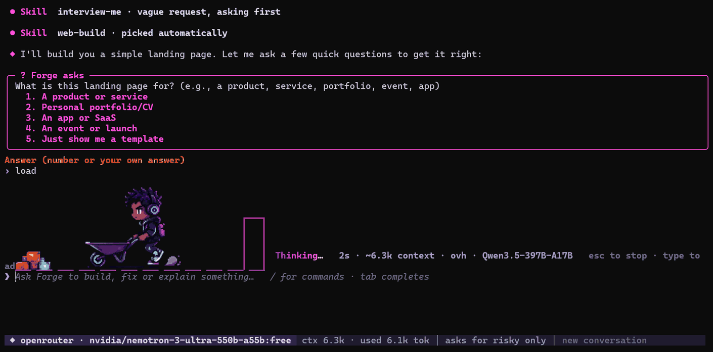
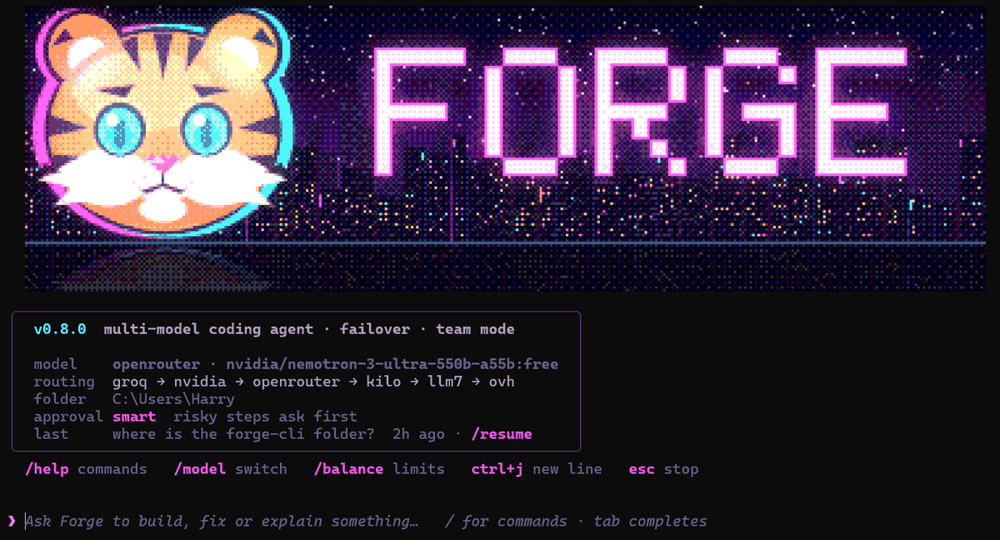
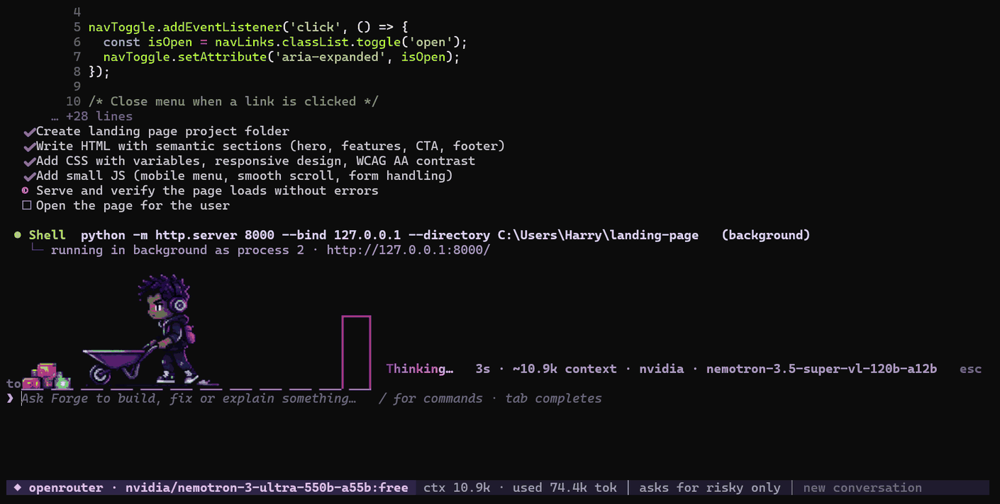

Reads, edits, runs
Files, search, shell, background dev servers. Every change arrives with its diff.
Forge reads your project, edits files and runs commands. Bring your own API keys from as many providers as you like: when one says 429, the next one picks up mid-sentence.
pipx install forgecommandlineSame conversation, your next key. You see one yellow line and keep working.
Illustrative run, real rules.
❯ fix the failing test in tests/test_api.py
Files, search, shell, background dev servers. Every change arrives with its diff.
Edits inside the folder just happen. rm, git push, global installs and anything outside wait for your yes.
Paste keys from Groq, NVIDIA, OpenRouter, OpenAI, Gemini and others, several per provider if you have them. Forge spreads the load across them. Your keys stay on your machine.
Eleven built in, including skill-inspector from NVIDIA SkillSpector, which vets a skill before you install it. Claude Code skills work unchanged.
forge -t puts several models on one task: they plan, build and review each other.
forge -c continues here. forge -r 20261110 continues from anywhere.



Every route ends at the same command: forge.
Get pipx, if you don't have it.
python -m pip install --user pipx && python -m pipx ensurepathInstall Forge into its own environment.
pipx install forgecommandlineNew terminal, any project folder.
forgePython 3.10 or newer.
python -m pip install forgecommandlineRun it in a project folder.
forgeUpdating later.
python -m pip install -U forgecommandlineforge-v0.8.7-windows-x64.zip, no Python needed.
Unzip and put the folder holding forge.exe on your PATH.
New terminal.
forgeClone.
git clone https://github.com/HSigei/forgeCLI.git && cd forgeCLIInstall, or run forge.cmd straight away on Windows.
python -m pip install .First run opens /setup to add your API keys. Add one or many: a key pasted into the chat later gets filed under the right provider and redacted. The more keys you add, the less you wait.
Commands, keys, failover settings, skills, team mode, config.
forge -c continues it here · forge -r from anywhere